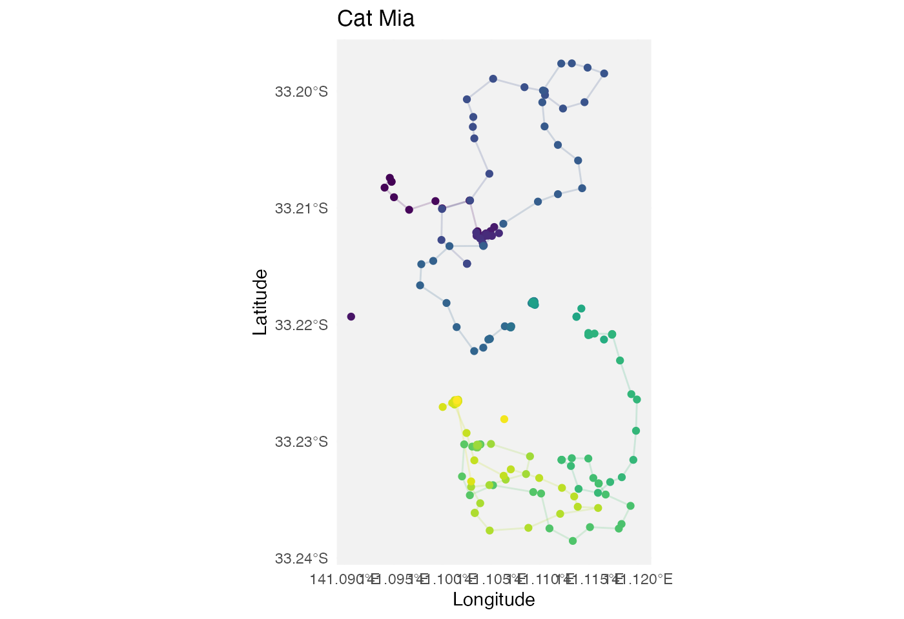
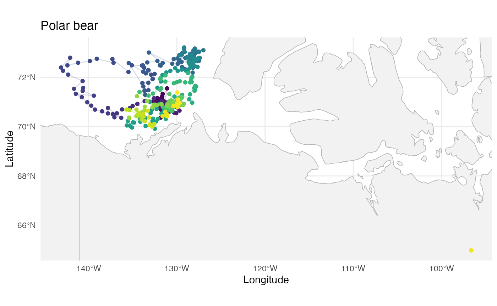
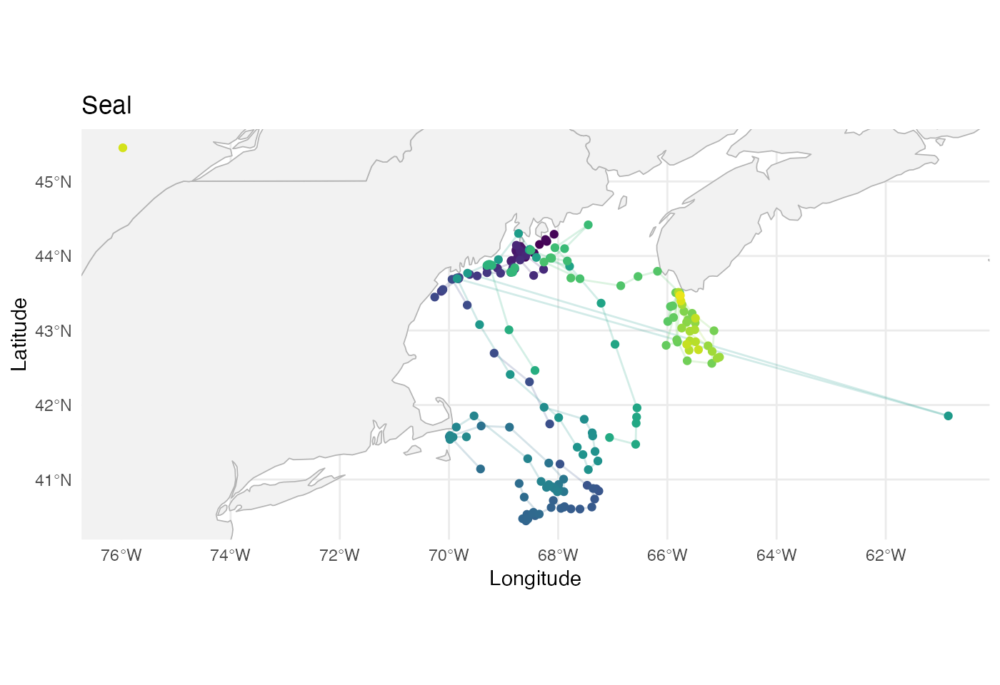
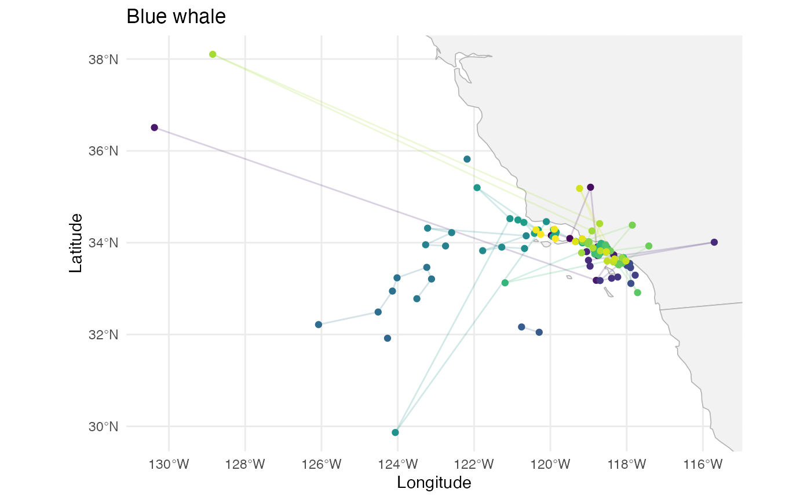
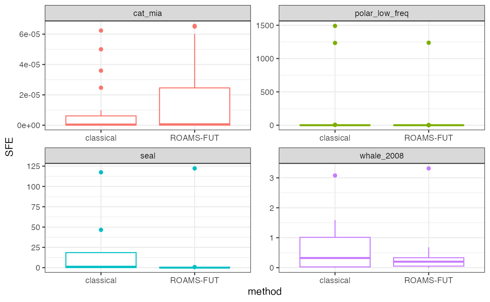
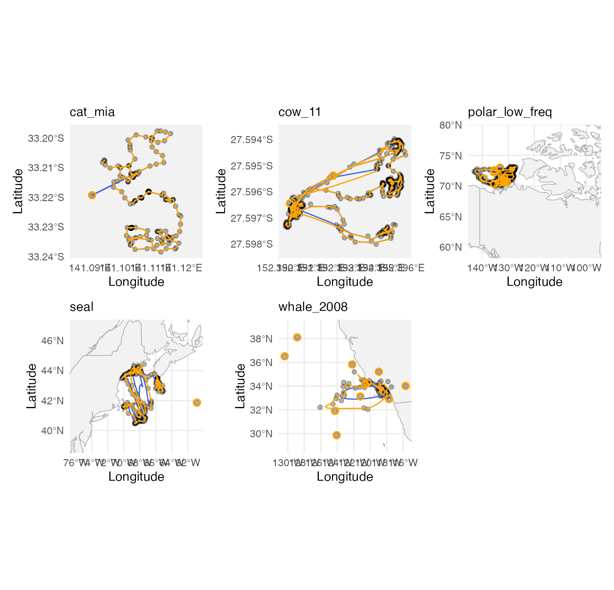
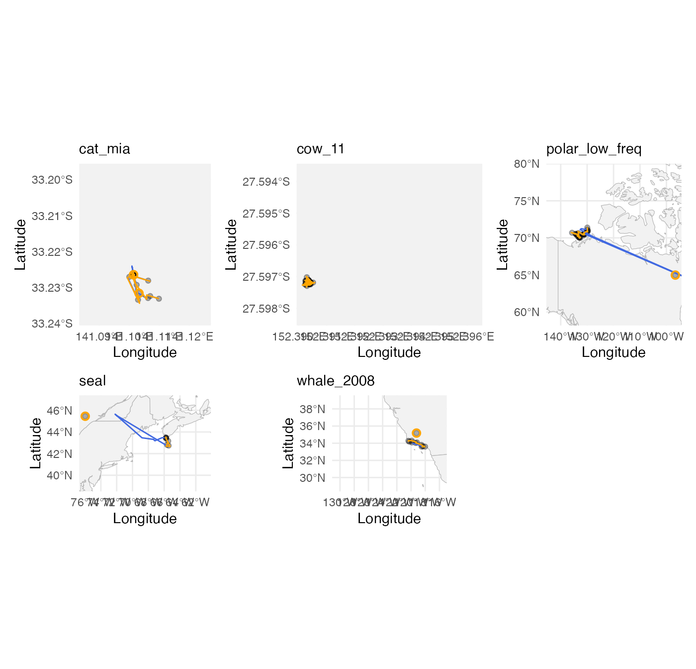
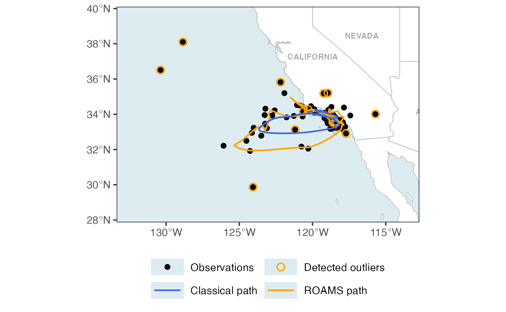
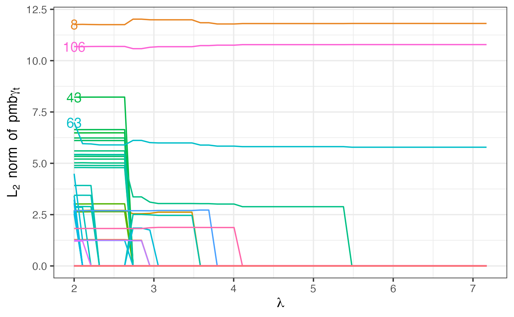

This page shows how the examples in Sections 5.1 and 5.2 of Shankar et al. (2025) are generated.
library(roams)
library(janitor)
library(tsibble)
library(tidyverse)
library(patchwork)
library(rnaturalearth)
library(rnaturalearthdata)
library(sf)
library(knitr)
# Get country boundaries as an sf object for later use
world <- rnaturalearth::ne_countries(scale = "medium", returnclass = "sf")The four data sets in this vignette are all modelled using the first-differenced correlated random walk (DCRW) model, a type of linear Gaussian SSM. This model is detailed in Auger-Méthé et al. (2021). The DCRW model has the following observation and state processes, \[\begin{align} \label{eq:DCRW_equations} \begin{split} \mathbf{y}_t &= \mathbf{z}_{t} + \mathbf{v}_t \\ \mathbf{z}_t &= \mathbf{z}_{t-1} + \phi(\mathbf{z}_{t-1} - \mathbf{z}_{t-2}) + \mathbf{w}_t, \end{split} \end{align}\] where \(\mathbf{y}_t\) is the location observed by the satellite, \(\mathbf{v}_t\) is the error from the satellite measurements, \(\mathbf{z}_t\) is the true location of the whale, and \(\mathbf{w}_t\) captures the randomness in the whale’s movement. Both \(\mathbf{y}_t\) and \(\mathbf{z}_t\) are 2-dimensional vectors containing longitude and latitude coordinates. The DCRW model assumes that the whale’s location depends on the previous location \(\mathbf{z}_{t-1}\), and the previous direction and speed of movement \(\mathbf{z}_{t-1} - \mathbf{z}_{t-2}\). The amount of dependence on \(\mathbf{z}_{t-1} - \mathbf{z}_{t-2}\) is determined by the correlation parameter \(\phi\in [0,1)\).
Notice the use of \(\mathbf{z}\) instead of \(\mathbf{x}\) for the state process; the DCRW model above is not in state-space form since the state process depends on the previous states, \(\mathbf{z}_{t-1}\) and \(\mathbf{z}_{t-2}\). This presentation makes it easier to understand the model dynamics, but in order to estimate the parameters of the model, the model must be converted into state-space form. See the beginning of Section 4 of Shankar et al. (2025) for a summary on how this is done.
Animals
We illustrate our method on four example data sets.
cat_mia = read_csv("data/Feral cat (Felis catus) - Scotia, NSW.csv") |>
clean_names() |>
mutate(algorithm_marked_outlier = ifelse(is.na(algorithm_marked_outlier),
FALSE,
algorithm_marked_outlier),
manually_marked_outlier = ifelse(is.na(manually_marked_outlier),
FALSE,
manually_marked_outlier),
outlier = algorithm_marked_outlier | manually_marked_outlier) |>
filter(individual_local_identifier == "Mia_FC642") |>
mutate(timestamp = lubridate::round_date(timestamp, "20 minutes")) |>
tsibble::tsibble() |>
tsibble::fill_gaps() |>
slice(-(1:19)) |>
as_tibble() |>
rename(x = location_long,
y = location_lat)
cat_max = read_csv("data/Feral cat (Felis catus) - Scotia, NSW.csv") |>
clean_names() |>
mutate(algorithm_marked_outlier = ifelse(is.na(algorithm_marked_outlier),
FALSE,
algorithm_marked_outlier),
manually_marked_outlier = ifelse(is.na(manually_marked_outlier),
FALSE,
manually_marked_outlier),
outlier = algorithm_marked_outlier | manually_marked_outlier) |>
filter(individual_local_identifier == "Max_MC629") |>
mutate(timestamp = lubridate::round_date(timestamp, "20 minutes")) |>
tsibble::tsibble() |>
tsibble::fill_gaps() |>
slice(-(1:24)) |>
as_tibble() |>
rename(x = location_long,
y = location_lat)Plot with world map data:
# Work out x/y ranges with some padding
x_range <- range(cat_mia$x, na.rm = TRUE)
y_range <- range(cat_mia$y, na.rm = TRUE)
x_pad <- diff(x_range) * 0.05 # 5% padding
y_pad <- diff(y_range) * 0.05 # 5% padding
p1 = cat_mia |>
ggplot() +
# Country boundaries
geom_sf(data = world, fill = "grey95", colour = "grey70", size = 0.3) +
# Animal track and points
geom_path(aes(x = x, y = y, colour = timestamp), alpha = 0.2) +
geom_point(aes(x = x, y = y, colour = timestamp)) +
# Colour scale
viridis::scale_color_viridis() +
# Labels and theme
labs(x = "Longitude", y = "Latitude", title = "Cat") +
theme_minimal() +
theme(legend.position = "none") +
# Focus map on whale’s range
coord_sf(
xlim = c(x_range[1] - x_pad, x_range[2] + x_pad),
ylim = c(y_range[1] - y_pad, y_range[2] + y_pad),
expand = FALSE
)
p1
polar_low_freq = read_csv("data/PB_Argos.csv") |>
# Standardise column names
clean_names() |>
# Convert date_time column to a proper datetime object called 'timestamp'
mutate(timestamp = ymd_hms(date_time)) |>
# Drop the original date_time column
select(-date_time) |>
# Round timestamps to the nearest day
mutate(timestamp = lubridate::round_date(timestamp, "1 day")) |>
# Within each group, keep only the first row (e.g. earliest observation per day)
group_by(timestamp) |>
slice_head(n = 1) |>
# Convert timestamp to a Date object (drop time-of-day information)
mutate(timestamp = as.Date(timestamp)) |>
# Convert the data to a tsibble object (time series tibble)
tsibble::tsibble() |>
# Fill in missing time points in the series with explicit gaps
tsibble::fill_gaps() |>
# Convert back to a regular tibble
as_tibble() |>
# Rename longitude/latitude columns to x and y
rename(x = lon, y = lat)Plot with world map data:
# Work out x/y ranges with some padding
x_range <- range(polar_low_freq$x, na.rm = TRUE)
y_range <- range(polar_low_freq$y, na.rm = TRUE)
x_pad <- diff(x_range) * 0.05 # 5% padding
y_pad <- diff(y_range) * 0.05 # 5% padding
p2 = p1 %+% polar_low_freq +
# Focus map on polar bear's range
coord_sf(
xlim = c(x_range[1] - x_pad, x_range[2] + x_pad),
ylim = c(y_range[1] - y_pad, y_range[2] + y_pad),
expand = FALSE
) +
labs(title = "Polar bear")
p2
seal = read_csv("data/sealLocs.csv") |>
# Keep only rows for the seal with ID "stephanie"
filter(id == "stephanie") |>
# Round timestamps to the nearest day
mutate(timestamp = lubridate::round_date(time, "1 day")) |>
# Within each group, keep only the last row (e.g. latest observation per day)
group_by(timestamp) |>
slice_tail(n = 1) |>
# Convert timestamp to a Date object (drop time-of-day information)
mutate(timestamp = as.Date(timestamp)) |>
# Convert the data to a tsibble object indexed by timestamp
tsibble::tsibble(index = timestamp) |>
# Fill in missing time points in the series with explicit gaps
tsibble::fill_gaps() |>
# Convert back to a regular tibble
as_tibble() |>
# Rename longitude/latitude columns to x and y
rename(x = lon,
y = lat)Plot with world map data:
# Work out x/y ranges with some padding
x_range <- range(seal$x, na.rm = TRUE)
y_range <- range(seal$y, na.rm = TRUE)
x_pad <- diff(x_range) * 0.05 # 5% padding
y_pad <- diff(y_range) * 0.05 # 5% padding
p1 %+% seal +
# Focus map on s's range
coord_sf(
xlim = c(x_range[1] - x_pad, x_range[2] + x_pad),
ylim = c(y_range[1] - y_pad, y_range[2] + y_pad),
expand = FALSE
) +
labs(title = "Seal")
whale_2008 = read_csv("data/Blue whales Eastern North Pacific 1993-2008 - Argos Data.csv") |>
# Standardise column names
janitor::clean_names() |>
# Keep only rows for the whale with ID "2008CA-Bmu-10839"
filter(individual_local_identifier == "2008CA-Bmu-10839") |>
# Replace missing values in 'manually_marked_outlier' with FALSE
mutate(manually_marked_outlier = tidyr::replace_na(manually_marked_outlier, FALSE)) |>
# Round timestamps to the nearest 12 hours
mutate(timestamp = lubridate::round_date(timestamp, "12 hours")) |>
# Within each group, keep only the last row (e.g. latest observation per 12-hour block)
group_by(timestamp) |>
slice_tail(n = 1) |>
# Convert the data to a tsibble object (time series tibble)
tsibble::tsibble() |>
# Fill in missing time points in the series with explicit gaps
tsibble::fill_gaps() |>
# Convert back to a regular tibble
as_tibble() |>
# Rename longitude/latitude columns to x and y
rename(x = location_long,
y = location_lat)Plot with world map data:
# Work out x/y ranges with some padding
x_range <- range(whale_2008$x, na.rm = TRUE)
y_range <- range(whale_2008$y, na.rm = TRUE)
x_pad <- diff(x_range) * 0.05 # 5% padding
y_pad <- diff(y_range) * 0.05 # 5% padding
p1 %+% whale_2008 +
# Focus map on s's range
coord_sf(
xlim = c(x_range[1] - x_pad, x_range[2] + x_pad),
ylim = c(y_range[1] - y_pad, y_range[2] + y_pad),
expand = FALSE
) +
labs(title = "Blue whale")
Data summary
Combine the data sets into a list:
data_sets = list(
"cat_mia" = cat_mia,
"polar_low_freq" = polar_low_freq,
"seal" = seal,
"whale_2008" = whale_2008
)Summary of missingness proportion and size of data sets
# Add column containing frequency of measurements for each data set
frequencies = c("20 minutes", "1 day", "1 day", "12 hours")
data_sets |>
map_dbl(~ mean(is.na(.$x))) |>
round(2) |>
as_tibble(rownames = "data_set") |>
rename(proportion_missing = value) |>
mutate(n = data_sets |> map_dbl(~ length(.$x))) |>
arrange(data_set) |>
select(data_set, n, proportion_missing) |>
mutate(interval = frequencies) |>
knitr::kable(
col.names = c("Data set", "Number of observations",
"Proportion missing", "Interval"))| Data set | Number of observations | Proportion missing | Interval |
|---|---|---|---|
| cat_mia | 342 | 0.27 | 20 minutes |
| polar_low_freq | 366 | 0.09 | 1 day |
| seal | 234 | 0.15 | 1 day |
| whale_2008 | 122 | 0.17 | 12 hours |
Model fitting
The last 10% of points from each data set are left out to use as a ‘test set’. The other 90% are used as a ‘training set’.
The code below fits the classical, ROAMS, Huber and trimmed methods to the training sets. It also computes the filtered and predicted values on the test sets so that mean-squared forecast errors (MSFE) can be reported.
results = tibble(
name = character(),
data_set = list(),
y_train = list(),
y_oos = list(),
classical_model = list(),
roams_model = list(),
roams_model_list = list(),
huber_model = list(),
trimmed_model = list(),
classical_oos = list(),
roams_fut_oos = list(),
roams_kalman_oos = list(),
huber_oos = list(),
trimmed_oos = list(),
oos_outliers_flagged = list()
)
for (i in 1:length(data_sets)) {
y_all = data_sets[[i]] |>
select(x, y) |>
as.matrix()
n = nrow(y_all)
n_train = round(0.9*n) # 90%/10% train/test split
n_oos = n - n_train
y_train = y_all[1:n_train,]
y_oos = y_all[(n_train+1):n,]
var_est = c(mad(diff(y_train[,1]), na.rm = TRUE)^2,
mad(diff(y_train[,2]), na.rm = TRUE)^2)
build_fn = function(par) {
phi_coef = par[1]
Phi = diag(c(1+phi_coef, 1+phi_coef, 0, 0))
Phi[1,3] = -phi_coef
Phi[2,4] = -phi_coef
Phi[3,1] = 1
Phi[4,2] = 1
A = diag(4)[1:2,]
Q = diag(c(par[2], par[3], 0, 0))
R = diag(c(par[4], par[5]))
x0 = c(y_train[1,], y_train[1,])
P0 = diag(rep(0, 4))
specify_SSM(
state_transition_matrix = Phi,
state_noise_var = Q,
observation_matrix = A,
observation_noise_var = R,
init_state_mean = x0,
init_state_var = P0)
}
build_fn_huber_trimmed = function(par) {
phi_coef = par[1]
Phi = diag(c(1+phi_coef, 1+phi_coef, 0, 0))
Phi[1,3] = -phi_coef
Phi[2,4] = -phi_coef
Phi[3,1] = 1
Phi[4,2] = 1
A = diag(4)[1:2,]
Q = diag(c(par[2], par[3], 0, 0))
R = diag(c(par[4], par[5]))
second_complete_obs = which(!is.na(y_train[,1]))[2]
diff = sum(abs(y_train[1,] - y_train[second_complete_obs,]))
x0 = c(y_train[1,], y_train[1,] + diff * 0.1)
P0 = diag(rep(0, 4))
specify_SSM(
state_transition_matrix = Phi,
state_noise_var = Q,
observation_matrix = A,
observation_noise_var = R,
init_state_mean = x0,
init_state_var = P0)
}
classical_model = classical_SSM(
y = y_train,
init_par = c(0.5, var_est, var_est),
build = build_fn,
lower = c(0, rep(1e-12, 4)),
upper = c(1, rep(Inf, 4)),
)
roams_model_list = roams_SSM(
y = y_train,
init_par = c(0.5, var_est, var_est),
build = build_fn,
num_lambdas = 50,
cores = 4,
lower = c(0, rep(1e-12, 4)),
upper = c(1, rep(Inf, 4)),
B = 50
)
huber_model = huber_robust_SSM(
y = y_train,
init_par = c(0.5, var_est, var_est),
build = build_fn_huber_trimmed,
lower = c(0.001, rep(1e-12, 4)),
upper = c(0.999, rep(Inf, 4))
)
trimmed_model = trimmed_robust_SSM(
y = y_train,
init_par = c(0.5, var_est, var_est),
build = build_fn_huber_trimmed,
alpha = 0.05, # assume a low level of 5% contamination
lower = c(0.001, rep(1e-12, 4)),
upper = c(0.999, rep(Inf, 4))
)
classical_model = attach_insample_info(classical_model)
huber_model = attach_insample_info(huber_model)
trimmed_model = attach_insample_info(trimmed_model)
roams_model = best_BIC_model(roams_model_list)
roams_model = attach_insample_info(roams_model)
# Out-of-sample metrics
# Re-create build function with different initial state mean
build_oos_fn = function(par) {
phi_coef = par[1]
Phi = diag(c(1+phi_coef, 1+phi_coef, 0, 0))
Phi[1,3] = -phi_coef
Phi[2,4] = -phi_coef
Phi[3,1] = 1
Phi[4,2] = 1
A = diag(4)[1:2,]
Q = diag(c(par[2], par[3], 0, 0))
R = diag(c(par[4], par[5]))
# Some data sets have first (few) out-of-sample timepoints missing,
# so get use first non-missing timepoint to initialise
first_complete_obs = which(!is.na(y_oos[,1]))[1]
x0_oos = c(y_oos[first_complete_obs,],
y_oos[first_complete_obs,])
P0 = diag(rep(0, 4))
specify_SSM(
state_transition_matrix = Phi,
state_noise_var = Q,
observation_matrix = A,
observation_noise_var = R,
init_state_mean = x0_oos,
init_state_var = P0)
}
# Huber and trimmed methods require the last two elements of the initial state mean to be perturbed by a small amount from the first two elements of the initial state mean
build_oos_fn_huber_trimmed = function(par) {
phi_coef = par[1]
Phi = diag(c(1+phi_coef, 1+phi_coef, 0, 0))
Phi[1,3] = -phi_coef
Phi[2,4] = -phi_coef
Phi[3,1] = 1
Phi[4,2] = 1
A = diag(4)[1:2,]
Q = diag(c(par[2], par[3], 0, 0))
R = diag(c(par[4], par[5]))
# Some data sets have first (few) out-of-sample timepoints missing,
# so get use first non-missing timepoint to initialise
first_complete_obs = which(!is.na(y_oos[,1]))[1]
second_complete_obs = which(!is.na(y_oos[,1]))[2]
diff = sum(abs(y_oos[first_complete_obs,] - y_oos[second_complete_obs,]))
x0_oos = c(y_oos[first_complete_obs,],
y_oos[first_complete_obs,] + diff * 0.1)
P0 = diag(rep(0, 4))
specify_SSM(
state_transition_matrix = Phi,
state_noise_var = Q,
observation_matrix = A,
observation_noise_var = R,
init_state_mean = x0_oos,
init_state_var = P0)
}
classical_oos = oos_filter(
y_oos = y_oos,
model = classical_model,
build = build_oos_fn)
roams_fut_oos = oos_filter(
y_oos = y_oos,
model = roams_model,
build = build_oos_fn,
multiplier = 2)
oos_outliers_flagged = which(roams_fut_oos$outliers_flagged == 1)
roams_kalman_oos = oos_filter(
y_oos = y_oos,
model = roams_model,
build = build_oos_fn,
multiplier = 1, threshold = Inf)
huber_oos = oos_filter(
y_oos = y_oos,
model = huber_model,
build = build_oos_fn_huber_trimmed)
trimmed_oos = oos_filter(
y_oos = y_oos,
model = trimmed_model,
build = build_oos_fn_huber_trimmed)
results = results |>
add_row(
name = names(data_sets)[i],
data_set = list(data_sets[[i]]),
y_train = list(y_train),
y_oos = list(y_oos),
classical_model = list(classical_model),
roams_model = list(roams_model),
roams_model_list = list(roams_model_list),
huber_model = list(huber_model),
trimmed_model = list(trimmed_model),
classical_oos = list(classical_oos),
roams_fut_oos = list(roams_fut_oos),
roams_kalman_oos = list(roams_kalman_oos),
huber_oos = list(huber_oos),
trimmed_oos = list(trimmed_oos),
oos_outliers_flagged = list(oos_outliers_flagged)
)
cat("Data set", i, "complete\n")
}
results = results |>
mutate(frequency = frequencies)
readr::write_rds(results, "data/results.rds")
# load pre-computed results
results = read_rds("data/results.rds")Results
Table of MSFEs per animal
This table forms part of Table 3 of Shankar et al. (2025). The MSFEs are reported relative to the classical method.
results |>
select(-roams_model_list) |>
mutate(roams_kalman_model = roams_model,
roams_fut_model = roams_model) |>
select(-data_set, -y_train, -frequency, -roams_model) |>
rename(y_test = y_oos) |>
pivot_longer(cols = ends_with("_oos"),
names_to = "method_oos", values_to = "oos_output") |>
pivot_longer(cols = ends_with("_model"),
names_to = "method_insample", values_to = "insample_output") |>
mutate(method_oos = str_remove(method_oos, "_oos"),
method_insample = str_remove(method_insample, "_model")) |>
filter(method_oos == method_insample) |>
rename(method = method_oos) |>
select(-method_insample) |>
mutate(
MSFE = map2_dbl(
oos_output, y_test,
function(oos_output, y_test) {
SFEs = rowSums((y_test - oos_output$predicted_observations)^2)
MSFE = mean(SFEs, na.rm = TRUE)
return(MSFE)
}
),
MSFE_clean = pmap_dbl(
list(oos_output, oos_outliers_flagged, y_test),
function(oos_output, oos_outliers_flagged, y_test) {
SFEs = rowSums((y_test - oos_output$predicted_observations)^2)
if (length(oos_outliers_flagged) == 0) {
MSFE = mean(SFEs, na.rm = TRUE)
} else {
MSFE = mean(SFEs[-oos_outliers_flagged], na.rm = TRUE)
}
return(MSFE)
}
),
phi_estimate = map_dbl(insample_output, ~ .$par[1])
) |>
select(name, method, phi_estimate, MSFE, MSFE_clean) |>
group_by(name) |>
mutate(
MSFE = MSFE / MSFE[which(method == "classical")],
MSFE_clean = MSFE_clean / MSFE_clean[which(method == "classical")]) |>
knitr::kable(digits = 2)| name | method | phi_estimate | MSFE | MSFE_clean |
|---|---|---|---|---|
| cat_mia | classical | 0.35 | 1.00 | 1.00 |
| cat_mia | roams_fut | 0.44 | 1.70 | 1.69 |
| cat_mia | roams_kalman | 0.44 | 1.04 | 1.04 |
| cat_mia | huber | 0.62 | 1.00 | 1.14 |
| cat_mia | trimmed | 0.61 | 1.02 | 1.16 |
| polar_low_freq | classical | 0.61 | 1.00 | 1.00 |
| polar_low_freq | roams_fut | 0.61 | 0.45 | 0.01 |
| polar_low_freq | roams_kalman | 0.61 | 1.12 | 1.21 |
| polar_low_freq | huber | 0.66 | 0.46 | 0.02 |
| polar_low_freq | trimmed | 0.65 | 0.47 | 0.03 |
| seal | classical | 0.50 | 1.00 | 1.00 |
| seal | roams_fut | 0.43 | 0.70 | 0.02 |
| seal | roams_kalman | 0.43 | 1.56 | 2.61 |
| seal | huber | 0.68 | 1.03 | 1.01 |
| seal | trimmed | 0.65 | 1.29 | 1.76 |
| whale_2008 | classical | 0.79 | 1.00 | 1.00 |
| whale_2008 | roams_fut | 0.43 | 0.67 | 0.41 |
| whale_2008 | roams_kalman | 0.43 | 0.94 | 0.86 |
| whale_2008 | huber | 0.75 | 0.69 | 0.40 |
| whale_2008 | trimmed | 0.61 | 0.68 | 0.40 |
Table of data set information
This table forms part of Table 2 of Shankar et
al. (2025). Other ROAMS fit-related information is displayed as
well, such as lambda chosen and number of
iterations.
results |>
select(-roams_model_list) |>
mutate(
n = map_dbl(y_train, ~ nrow(.)),
n_complete = map_dbl(y_train, ~ sum(!is.na(.[,1]))),
n_oos = map_dbl(y_oos, ~ nrow(.)),
n_oos_complete = map_dbl(y_oos, ~ sum(!is.na(.[,1]))),
lambda = map_dbl(roams_model, ~ .$lambda),
iterations = map_dbl(roams_model, ~ .$iterations),
in_sample_detected = map2_dbl(roams_model, n_complete,
~ .x$prop_outlying * .y),
oos_detected = map_dbl(roams_fut_oos,
~ sum(.$outliers_flagged)),
roams_phi = map_dbl(roams_model, ~ .$par[1]),
classical_phi = map_dbl(classical_model, ~ .$par[1])
) |>
select(name, frequency, lambda, iterations,
n, n_complete, in_sample_detected,
n_oos, n_oos_complete, oos_detected) |>
knitr::kable(digits = 3)| name | frequency | lambda | iterations | n | n_complete | in_sample_detected | n_oos | n_oos_complete | oos_detected |
|---|---|---|---|---|---|---|---|---|---|
| cat_mia | 20 minutes | 2.000 | 4 | 308 | 224 | 1 | 34 | 25 | 3 |
| polar_low_freq | 1 day | 3.116 | 5 | 329 | 304 | 12 | 37 | 28 | 1 |
| seal | 1 day | 3.414 | 4 | 211 | 190 | 1 | 23 | 8 | 1 |
| whale_2008 | 12 hours | 2.693 | 50 | 110 | 90 | 11 | 12 | 11 | 1 |
Plot out-of-sample squared forecast errors
Box plots of squared forecast errors for the classical and ROAMS-FUT methods.
results |>
select(-roams_model_list) |>
mutate(
classical_SFEs = map2(
classical_oos, y_oos,
function(classical_oos, y_oos) {
SFEs = rowSums((y_oos - classical_oos$predicted_observations)^2)
SFEs = na.omit(SFEs)
return(SFEs)
}
),
roams_SFEs = map2(
roams_fut_oos, y_oos,
function(roams_fut_oos, y_oos) {
SFEs = rowSums((y_oos - roams_fut_oos$predicted_observations)^2)
SFEs = na.omit(SFEs)
return(SFEs)
}
)
) |>
select(name, classical_SFEs, roams_SFEs) |>
pivot_longer(c(classical_SFEs, roams_SFEs),
names_to = "method", values_to = "SFE") |>
mutate(method = ifelse(method == "roams_SFEs",
"ROAMS-FUT",
"classical")) |>
unnest_longer(SFE) |>
ggplot() +
aes(x = method, y = SFE, colour = name) +
geom_boxplot() +
facet_wrap(~ name, scales = "free") +
theme_bw() +
theme(legend.position = "none")
Plot in-sample fit
plots = list()
for (i in 1:length(data_sets)) {
# Work out x/y ranges with some padding
x_range <- range(data_sets[[i]]$x, na.rm = TRUE)
y_range <- range(data_sets[[i]]$y, na.rm = TRUE)
x_pad <- max(diff(y_range) - diff(x_range), 0) / 2 + diff(x_range) * 0.05
y_pad <- max(diff(x_range) - diff(y_range), 0) / 6 + diff(y_range) * 0.05
result = results |>
slice(i)
fitted_paths = tibble(
x_roams = result$roams_model[[1]]$smoothed_observations[,1],
y_roams = result$roams_model[[1]]$smoothed_observations[,2],
x_classical = result$classical_model[[1]]$smoothed_observations[,1],
y_classical = result$classical_model[[1]]$smoothed_observations[,2]
)
detected_outliers = which(rowSums(abs(result$roams_model[[1]]$gamma)) != 0)
plots[[i]] = data_sets[[i]] |>
# Retain in-sample data points
slice(1:round(0.9*n())) |>
ggplot() +
# Country boundaries
geom_sf(data = world, fill = "grey95", colour = "grey70", size = 0.3) +
# Animal path and points
geom_point(aes(x = x, y = y), alpha = 0.3) +
geom_path(data = fitted_paths,
aes(x = x_classical,
y = y_classical), colour = "royalblue") +
geom_path(data = fitted_paths,
aes(x = x_roams,
y = y_roams), colour = "orange") +
geom_point(data = data_sets[[i]] |>
slice(1:round(0.9*n())) |>
slice(detected_outliers),
aes(x = x, y = y),
colour = "orange", size = 2, stroke = 1, pch = 1) +
# Focus map on animal’s range
coord_sf(
xlim = c(x_range[1] - x_pad, x_range[2] + x_pad),
ylim = c(y_range[1] - y_pad, y_range[2] + y_pad),
expand = FALSE
) +
# Labels and theme
labs(x = "Longitude", y = "Latitude", subtitle = names(data_sets)[i]) +
theme_minimal() +
theme(legend.position = "none",
aspect.ratio = 1)
}
wrap_plots(plots) + plot_layout(ncol = 2)
Plot one-step-ahead out-of-sample predictions
These plots only show the out of sample predictions (not the full path). It is interesting to see where the test set observations lie relative to the training set observations (blank canvas for some of these data sets).
plots = list()
for (i in 1:length(data_sets)) {
# Work out x/y ranges with some padding
x_range <- range(data_sets[[i]]$x, na.rm = TRUE)
y_range <- range(data_sets[[i]]$y, na.rm = TRUE)
x_pad <- max(diff(y_range) - diff(x_range), 0) / 2 + diff(x_range) * 0.05
y_pad <- max(diff(x_range) - diff(y_range), 0) / 6 + diff(y_range) * 0.05
result = results |>
slice(i)
oos_paths = tibble(
x_roams = result$roams_fut_oos[[1]]$predicted_observations[,1],
y_roams = result$roams_fut_oos[[1]]$predicted_observations[,2],
x_classical = result$classical_oos[[1]]$predicted_observations[,1],
y_classical = result$classical_oos[[1]]$predicted_observations[,2]
)
detected_outliers = which(result$roams_fut_oos[[1]]$outliers_flagged == 1)
plots[[i]] = data_sets[[i]] |>
# Retain out-of-sample data points only
slice((round(0.9*n()) + 1) : n()) |>
ggplot() +
# Country boundaries
geom_sf(data = world, fill = "grey95", colour = "grey70", size = 0.3) +
# Animal path and points
geom_point(aes(x = x, y = y), alpha = 0.3) +
geom_path(data = oos_paths,
aes(x = x_classical,
y = y_classical), colour = "royalblue") +
geom_path(data = oos_paths,
aes(x = x_roams,
y = y_roams), colour = "orange") +
geom_point(data = data_sets[[i]] |>
slice((round(0.9*n()) + 1) : n()) |>
slice(detected_outliers),
aes(x = x, y = y),
colour = "orange", size = 2, stroke = 1, pch = 1) +
# Focus map on animal's range
coord_sf(
xlim = c(x_range[1] - x_pad, x_range[2] + x_pad),
ylim = c(y_range[1] - y_pad, y_range[2] + y_pad),
expand = FALSE
) +
# Labels and theme
labs(x = "Longitude", y = "Latitude", subtitle = names(data_sets)[i]) +
theme_minimal() +
theme(legend.position = "none",
aspect.ratio = 1)
}
wrap_plots(plots) + plot_layout(ncol = 2)
Blue whale plots
This section reproduces the outputs in Section 5.2 of Shankar et al. (2025).
Map
Fit ROAMS and classical models to blue whale data:
var_est = c(mad(diff(y[,1]), na.rm = TRUE)^2,
mad(diff(y[,2]), na.rm = TRUE)^2)
build_fn = function(par) {
phi_coef = par[1]
Phi = diag(c(1+phi_coef, 1+phi_coef, 0, 0))
Phi[1,3] = -phi_coef
Phi[2,4] = -phi_coef
Phi[3,1] = 1
Phi[4,2] = 1
A = diag(4)[1:2,]
Q = diag(c(par[2], par[3], 0, 0))
R = diag(c(par[4], par[5]))
x0 = c(y[1,], y[1,])
P0 = diag(rep(0, 4))
specify_SSM(
state_transition_matrix = Phi,
state_noise_var = Q,
observation_matrix = A,
observation_noise_var = R,
init_state_mean = x0,
init_state_var = P0)
}
classical_model = classical_SSM(
y,
c(0.5, var_est, var_est),
build_fn,
lower = c(0, rep(1e-12, 4)),
upper = c(1, rep(Inf, 4)),
)
roams_model_list = roams_SSM(
y,
c(0.5, var_est, var_est),
build_fn,
num_lambdas = 50,
cores = 4,
lower = c(0, rep(1e-12, 4)),
upper = c(1, rep(Inf, 4)),
B = 50
)
classical_model = attach_insample_info(classical_model)
roams_model = best_BIC_model(roams_model_list)
roams_model = attach_insample_info(roams_model)
plot_data = tibble(
x_data = y[,1],
y_data = y[,2],
x_roams = roams_model$smoothed_observations[,1],
y_roams = roams_model$smoothed_observations[,2],
x_classical = classical_model$smoothed_observations[,1],
y_classical = classical_model$smoothed_observations[,2],
outliers = (rowSums(abs(roams_model$gamma)) != 0),
)
readr::write_rds(plot_data, "data/whale_plot_data.rds")
readr::write_rds(roams_model_list, "data/whale_roams_model_list.rds")
readr::write_rds(classical_model, "data/whale_classical_model.rds")Load whale_plot_data.rds and
whale_roams_model_list.rds:
plot_data = readr::read_rds("data/whale_plot_data.rds")
roams_model_list = readr::read_rds("data/whale_roams_model_list.rds")
classical_model = readr::read_rds("data/whale_classical_model.rds")
theme_set(
theme_bw(base_size = 14) +
theme(legend.position = "bottom",
legend.key.width = unit(1.2, "cm"))
)
world = ne_countries(scale = "medium", returnclass = "sf")
# States/Provinces
states = ne_states(country = "United States of America")
plot_features = c("observations", "detected outliers", "classical path", "roams path")
colours = c("black", "orange", "royalblue", "orange")
labels = c("Observations", "Detected outliers", "Classical path", "ROAMS path")
p1 = ggplot(plot_data) +
geom_sf(data = world, fill = "white", color = "grey", linewidth = 0.3) +
# State/province labels
geom_sf_text(data = states, aes(label = str_to_upper(name)), size = 3,
color = "darkgrey", fontface = "bold") +
geom_sf(data = states, fill = NA, color = "grey", linewidth = 0.3) +
geom_point(aes(x = x_data, y = y_data, colour = "observations"),
size = 2) +
geom_point(data = plot_data |> filter(outliers),
aes(x = x_data, y = y_data, colour = "detected outliers"),
size = 3, pch = 1, stroke = 1) +
geom_path(aes(x = x_roams, y = y_roams,
colour = "roams path"),
linewidth = 0.8) +
geom_path(aes(x = x_classical, y = y_classical,
colour = "classical path"),
linewidth = 0.8) +
coord_sf(xlim = c(min(plot_data$x_data, na.rm = TRUE) - 3,
max(plot_data$x_data, na.rm = TRUE) + 3),
ylim = c(min(plot_data$y_data, na.rm = TRUE) - 2,
max(plot_data$y_data, na.rm = TRUE) + 2),
expand = FALSE) +
theme(panel.grid.major = element_blank(),
panel.background = element_rect(fill = "#ddecf0")) +
labs(x = NULL, y = NULL, colour = NULL) +
scale_colour_manual(values = setNames(colours, plot_features),
labels = setNames(labels, plot_features),
breaks = plot_features) +
guides(colour = guide_legend(ncol = 2, byrow = TRUE))
p1
Map + BIC and proportion outlying curves
Figure 7 of Shankar et al. (2025):
p2 = roams_model_list |> autoplot()
# Final plot
p1 + p2
Table of parameter estimates
Table 4 of Shankar et al. (2025):
roams_model = best_BIC_model(roams_model_list)
roams_model = attach_insample_info(roams_model)
tibble(
roams_model$par,
classical_model$par,
) |>
t() |>
as_tibble() |>
setNames(c("phi",
"state error var lon", "state error var lat",
"obs error var lon", "obs error var lat"
)) |>
mutate(method = c("ROAMS", "classical")) |>
select(method, everything()) |>
knitr::kable(digits = 3)| method | phi | state error var lon | state error var lat | obs error var lon | obs error var lat |
|---|---|---|---|---|---|
| ROAMS | 0.438 | 0.101 | 0.027 | 0.079 | 0.013 |
| classical | 0.712 | 0.032 | 0.002 | 2.783 | 0.613 |
Path plot of gamma shift parameters
This plot shows how the \(L_2\)-norm of the \(\boldsymbol{\gamma}_t\) parameter changes as \(\lambda\) increases, for \(t=1,\dots,n\). It can give insight into how different timepoints are flagged/unflagged as outliers depending on the value of \(\lambda\). The four timepoints with the largest \(L_2\)-norm at the lowest \(\lambda\) have been labelled.
roams_model_list |>
get_attribute("gamma") |>
map(~ apply(., 1, function(gamma) {sqrt(sum(gamma^2))})) |>
as.data.frame() |>
setNames(paste0("lambda_", 1:50)) |>
tibble() |>
mutate(timepoint = 1:122) |>
pivot_longer(-timepoint, names_to = "lambda", values_to = "gamma_L2") |>
mutate(lambda = rep(get_attribute(roams_model_list, "lambda"), 122)) |>
(\(df)
ggplot(df) +
aes(x = lambda, y = gamma_L2, colour = factor(timepoint)) +
geom_line() +
geom_text(data = df |>
group_by(timepoint) |>
slice(1) |>
ungroup() |>
slice_max(gamma_L2, n = 4),
aes(label = timepoint)) +
labs(x = latex2exp::TeX("$\\lambda$"),
y = latex2exp::TeX("$L_2 \\ norm \\ of \\ \\gamma_t$")) +
theme(legend.position = "none"))()